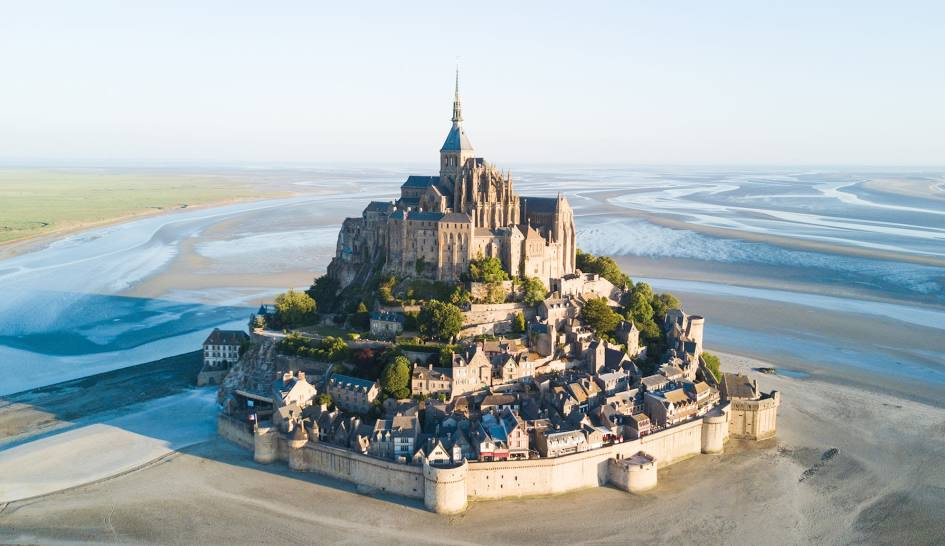
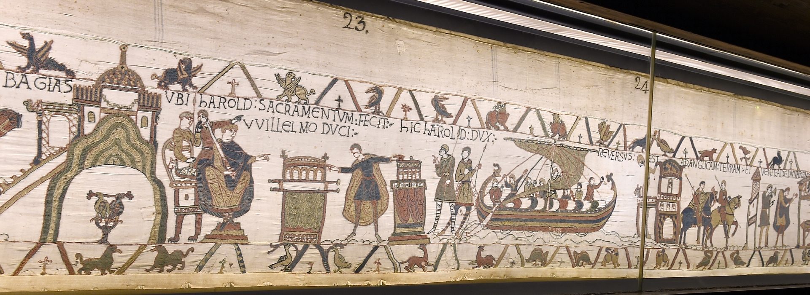
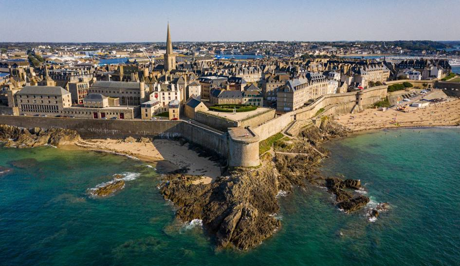

We had a very nice summer vacation this year in Normandy and Brittany, visiting sites and the coast. The food was awesome, the weather got better every day, and being with my parents was very nice.
Here are some pictures of each of some of my favorite places we came along:
Le Mont Saint Michele Abbey
A marvelous building in the middle of the coast, this building is a magnificent example of the roman and gothic style architecture.
The Bayeux Tapestry
The Bayeux Tapestry is an embroidered cloth nearly 70 metres (230 feet) long and 50 centimetres (20 inches) tall that depicts the events leading up to the Norman Conquest of England in 1066, led by William, Duke of Normandy challenging Harold II, King of England, and culminating in the Battle of Hastings. I found it fasctinating to see such beautiful handcraft and the idea of a movie like scenery on a tapestry.
Saint Malo
The walled city on the English Channel coast had a long history of piracy, earning much wealth from local extortion and overseas adventures. It has a beautiful city wall, nice restauarants, cafes, and also a beach.
For more information, you can visit Wikipedia: